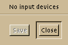

This dialog is used to enable XInput devices. By default, no
extension devices are enabled. We need a mechanism to allow users
to enable and configure their extension devices. GTK provides the
InputDialog widget to automate this process. The following
procedure manages an InputDialog widget. It creates the dialog if
it isn't present, and shows it otherwise.
GTK.InputDialog inputd;
void create_input_dialog ()
{
if (!inputd)
{
inputd = GTK.InputDialog();
inputd->close_button()->signal_connect("clicked",inputd->hide, 0);
inputd->save_button()->hide();
inputd->show();
}
else
inputd->show();
}
GTK.InputDialog()

Signals:
disable_device
his signal is emitted when the user changes the mode of a device from a GDK_MODE_SCREEN or GDK_MODE_WINDOW to GDK_MODE_ENABLED
enable_device
This signal is emitted when the user changes the mode of a device from GDK_MODE_DISABLED to a GDK_MODE_SCREEN or GDK_MODE_WINDOW.
 GTK.Image()->set()
GTK.Image()->set()